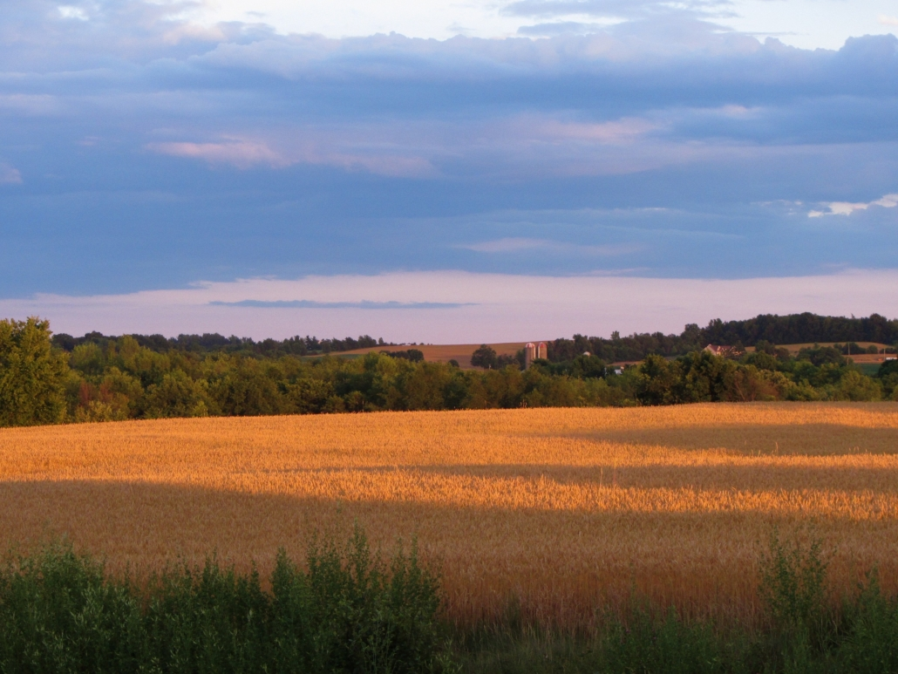
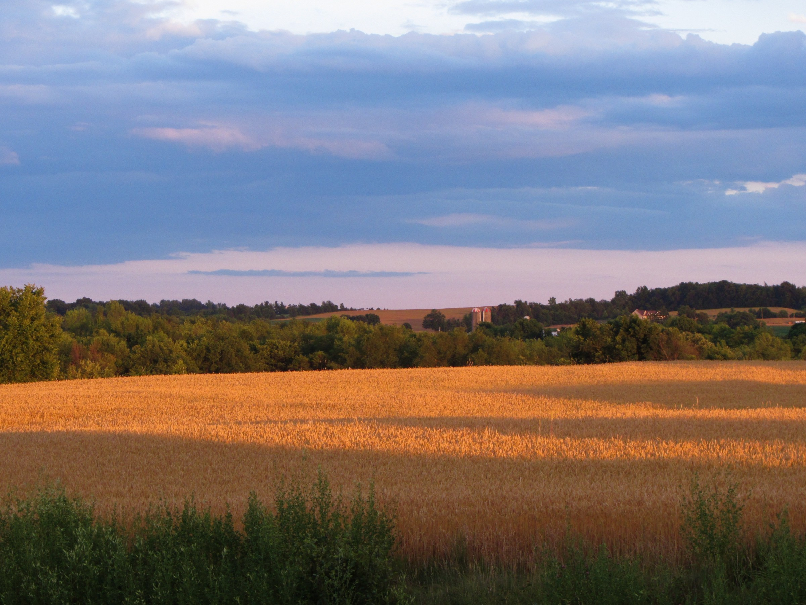
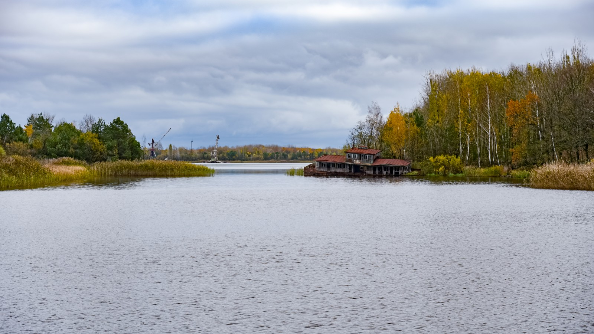
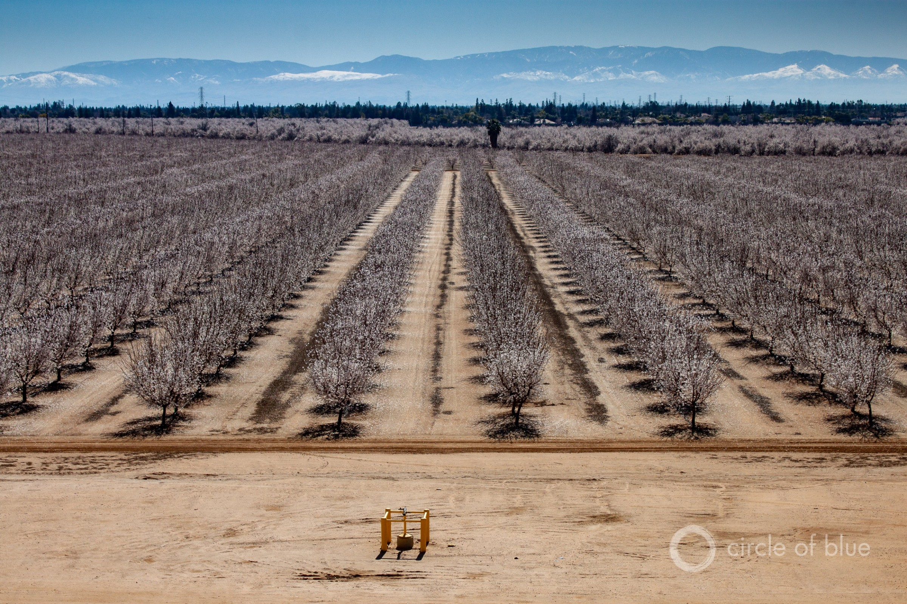
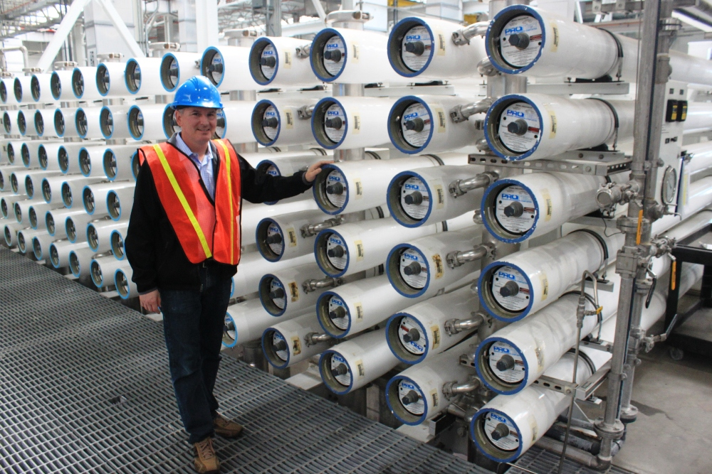
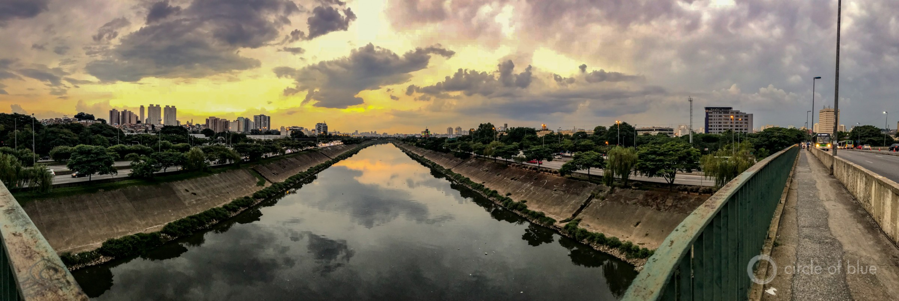

‘The Need Is Significant’: Fast-Growing Michigan County Confronts Groundwater Challenges
Another great piece, Brett.But I do take objection to your subtitle of 'Growth Requires Water.'That implies that population or GDP growth requires additional water, but that’s no longer true!We have a new paper in review at the Journal of the American Water Resources Association (JAWRA) that documents how cities across the US have been able to grow while at the same time REDUCING their total water use.They’re accomplishing this because they’re finding ways to aggressively drive down their per-capita water use.
Posted On: 2020-02-24T13:43:00
Posted By: Brian Richter
Brian, you’re right in many ways.Total U.S water withdrawals peaked in the 1980s even as population and GDP continue to rise.Per capita water use — and even total water use — has been declining in many large cities for years, as you note.The point with that heading title is that growth does indeed require water, not necessarily *more* water than is currently being used, but water nonetheless.New developments have to find a water source.Cities have accommodated that water requirement by becoming more efficient, rethinking landscaping, reallocating from agriculture or declining industrial use, and other tactics.
Posted On: 2020-02-24T16:10:00
Posted By: Brett Walton






Content Date: 2020-02-24
Download Date: 2021-05-12
Document ID: L0C04BF30